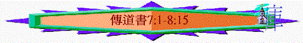

|
人
生 的 意 義 |
|||
|
引言 |
勞碌的價值 |
意義的人生 |
總結 |
|
1:1 |
1:1-6:12 |
7:1-12:7 |
12:8-14 |
〜此段已經少了「虛空」「勞碌」字眼，反而多了「智慧」「敬畏神」等字
〜作者在1-6章帶出凡事皆虛空，雖然虛空，但人在日光之下可活得積極，有意義，甚至存到永恆，秘訣在於要有智慧，要知道有一日要向神交賬。
1.智慧的選擇(7:1-22)
〜此段很多「強如」「智慧」字，人若用智慧選擇更好的事，可以活得更超越
A.遭喪家或往筵席
-->
關乎生死（7:1-4）
「往遭喪的家去，強如往宴樂的家去；因為死是眾人的結局，活人也必將這事放在心上。」7:2
「智慧人的心在遭喪之家；愚昧人的心在快樂之家。」7:4
〜為甚麼要往喪家去強如往宴樂家呢？原因如下
a.深刻提醒
〜活人往喪家，必發現一個事實，原來沒人能逃避死亡，每個人也要面對，是眾人的結果，他會更深刻將這不變定律放在心上，有一日，自己也要如此，自己應如何活下去呢？
b.更深啟會
(1)名譽強如膏油
「名譽強如美好的膏油；人死的日子勝過人生的日子。」7:1
〜一個人死了，即使用最好的膏油膏他的遺體，令他身體不易腐化，有適當香氣，但若那人沒有好名馨，沒有生命的馨香，有幾多香膏在他身上，人仍覺得他臭名遠播，死了有甚麼可惜地方？
〜相反他生前有好名譽，好行為，即使沒有美好膏油，仍可令人感受到他生前生命的馨香。
〜另外，人死後的日子，往往更令人深刻、懷念，他死後會更有名譽，更多人題起，所以死的日子勝過他生的日子。
(2)憂愁強如喜笑
「憂愁強如喜笑；因為面帶愁容，終必使心喜樂。」7:3
〜聖經曾經題及一宿雖然有哭泣，早晨必歡呼；另外為罪憂愁的人，最後會產生慇懃，熱心起來！
〜而去到喪家，必見到很多愁容，但他們至終可得安慰，可重拾心情，歡喜過來，這種從幽谷起來的經歷實在可貴。
〜但去到宴樂地方，人用很多娛樂，美酒令自己快樂，但早晨起來，仍要面對生活，面對自己曾經逃避的問題，這種快樂至極再去到幽谷
，令人感到更失落！
B.聽忠言或愛被讚
-->
關乎分辨(7:5-7)
a.虛空的言語
「聽智慧人的責備，強如聽愚昧人的歌唱。愚昧人的笑聲，好像鍋下燒荊棘的爆聲；這也是虛空。」7:5-6
「棄絕管教的，必致貧受辱；領受責備的，必得尊榮。」箴13:18
「愚妄人藐視父親的管教；領受責備的，得著見識。」箴15:5
〜人的責備，可是令人感到逆耳，但能幫人，能建立造就人，愚味人愛歌唱，用很多虛浮的言語讚美人，如鍋下燒荊棘的爆聲，是刺耳，是短暫的，是虛空的。
b.扭曲的判斷
「勒索使智慧人變為愚妄；賄賂能敗壞人的慧心。」7:7
〜愚味人不單會用言語令人心悅，也用金錢收買人的心，敗壞人的分辨之心，使人作出不正確的判斷。
C.存忍耐或易顯露
-->
關乎日子(7:8-10)
a.在得意的日子
-->
忍耐/自滿
「事情的終局強如事情的起頭；存心忍耐的，勝過居心驕傲的。」7:8
〜人在得意時，易心存驕傲，但其實事情還未完結，只是起頭，等待終局，才知道究竟是否成功，為何這麼快自滿起來，不如存忍耐的心看看終局如何還好。
b.在激動的日子
-->
平靜/發怒
「你不要心裡急躁惱怒，因為惱怒存在愚昧人的懷中。」7:9
「不輕易發怒的，勝過勇士；治服己心的，強如取城。」箴16:32
「我親愛的弟兄們，這是你們所知道的，但你們各人要快快的聽，慢慢的說，慢慢的動怒，因為人的怒氣並不成就神的義。」雅1:19-20
〜愚昧人易發怒，但發怒不能建立自己，也不能造就別人，更不能成就神的義，有甚麼益處，倒不如忍耐，平靜自己的心，看看神的公義，看看終局如何！
c.在失敗的日子
-->
向前/懷緬
「不要說：先前的日子強過如今的日子，是什麼緣故呢？你這樣問，不是出於智慧。」7:10
〜人在失敗中，常懷緬過往成功至強的日子，但這不是出於智慧，智慧的人是不停留懷緬，怨歎中，而是忘記背後，努力面前，而且終局也未出現，何以見得將來不比以往好呢！
D.要智慧或得產業
-->
關乎擁有(7:11-12)
「智慧和產業並好，而且見天日的人得智慧更為有益。因為智慧護庇人，好像銀錢護庇人一樣。惟獨智慧能保全智慧人的生命。這就是知識的益處。」7:11-12
〜智慧如銀子一樣能護庇人，但銀子不能真正保護人的性命，反而可能令人加添愁煩，增加被謀財害命機會，智慧卻可以令人生活得更積極，人在苦難中，更能想出方法，保全人的性命。
E.遭患難或遇亨通
-->
關乎際遇(7:13-14)
〜有些人一生希望只是選擇亨通，不想遇患難，但其實神使兩樣並列，有祂的意思：
a.使人知道神掌管一切
「你要察看神的作為；因神使為曲的，誰能變為直呢？」7:13
〜若人一生只亨通，他覺得每天是必然，自然的事，但每一日所發生的卻不同，他才真知道神的作為，神掌管一切，叫人順利，叫人受患難，不能改變。
b.使人更能儆醒渡餘生
「遇亨通的日子你當喜樂；遭患難的日子你當思想；因為神使這兩樣並列，為的是叫人查不出身後有什麼事。」7:14
〜若每天都是順利日子，人能知道，預測明天也是順利，可以閒懶過一生，但神使人兩樣並列，叫人不知明天如何，人會更有預備的心(明天可能會有缺乏，明天可能會有苦難)，更儆醒過每一天！
F.行善行或行惡行
-->
關乎德行(7:15-20)
a.不過分
「不要行義過分，也不要過於自逞智慧，何必自取敗亡呢？不要行惡過分，也不要為人愚昧，何必不到期而死呢？」7:16-17
〜為何「不要行義過分」，若單方面對某人行義(例如管理不干己之事，責備愚眛人)，但沒理會當時情況，沒有靈巧的心，也不理人的感受，這也不是最有智慧。
b.要持守
「你持守這個為美，那個也不要鬆手；因為敬畏神的人，必從這兩樣出來。」7:18
〜敬畏神，必然持守不犯罪，要行善，因為有一日，我們要到死期，要向神交賬的。
c.更有力
「智慧使有智慧的人比城中十個官長更有能力。時常行善而不犯罪的義人，世上實在沒有。」7:19-20
〜作為一個官長，他若沒智慧也不聽忠言，他根本不能說服人，得人心，若沒有能力好好管治地方，但智慧人比城中七個官長更有能力，因他有智慧，所以能有技巧治理地方，也能得百姓的心！
G.處泰然或耿於懷
-->
關乎閒言(7:21-22)
「人所說的一切話，你不要放在心上，恐怕聽見你的僕人咒詛你。因為你心裡知道，自己也曾屢次咒詛別人。」7:21-22
〜為何「不放在心」，若時常覺人的說話是指向你，針對你，你會對你僕人的閒談，更敏感，更易聽到人背後對你說不是，又有何益處呢？
〜自己何嘗不是也屢次咒詛別人，所以不要太敏感，太介懷別人的說話。
2.智慧的尋索(7:23-29)
〜在前文中(1-6)，人雖然很多不知道的事，但若專心用智慧考究萬事之理，必發現有一樣總知道的，就是原來人是有罪的！
A.專心尋求
「我轉念，一心要知道，要考察，要尋求智慧和萬事的理由；又要知道邪惡為愚昧，愚昧為狂妄。」7:25
B.實例考究
「我得知有等婦人比死還苦：他的心是網羅，手是鎖鍊。凡蒙神喜悅的人必能躲避他；有罪的人卻被他纏住了。傳道者說：「看哪，一千男子中，我找到一個正直人，但眾女子中，沒有找到一個。」我將這事一一比較，要尋求其理，我心仍要尋找，卻未曾找到。」7:26-28
C.有所發現
「我所找到的只有一件，就是神造人原是正直，但他們尋出許多巧計。」7:29
a.人原是正直
b.人卻行歪路
〜人生其中最大發現，就是發現人有罪的，這也是引向救恩的重要關鍵，不知自己罪，何以尋找神，敬畏神，倚靠相信神所設立的救法呢？因此，要活得豐盛，永恆，人必需如作者一樣，用智慧探索原來人(包括自己)原來用了很多巧計，犯罪，得罪神！
3.智慧的福樂(8:1-15)
〜在1-6章中，或許有些事情是短暫，不能存永遠，但若人擁有智慧，並用智慧生活，他必然得著無比福樂，甚至可存到永久的！
A.生命改變
「誰如智慧人呢？誰知道事情的解釋呢？人的智慧使他的臉發光，並使他臉上的暴氣改變。」8:1
〜人有智慧，他生命也有改變，少了暴氣，在王面前，也可以不急躁。
B.心思通透
「凡遵守命令的，必不經歷禍患；智慧人的心能辨明時候和定理（原文作審判；下節同）。」8:5
a.知道萬事有定時定理
「各樣事務成就都有時候和定理，因為人的苦難重壓在他身上。」8:6
b.知道明天如何還不知
「他不知道將來的事，因為將來如何，誰能告訴他呢？」8:7
c.知道無人有力掌死期
「無人有權力掌管生命，將生命留住；也無人有權力掌管死期；這場爭戰，無人能免；邪惡也不能救那好行邪惡的人。」8:8
d.知道敬神終久必得福
「罪人雖然作惡百次，倒享長久的年日；然而我準知道，敬畏神的，就是在他面前敬畏的人，終久必得福樂。惡人卻不得福樂，也不得長久的年日；這年日好像影兒，因他不敬畏神。」8:12-13
e.知道在虛空下可快樂
「世上有一件虛空的事，就是義人所遭遇的，反照惡人所行的；又有惡人所遭遇的，反照義人所行的。我說，這也是虛空。我就稱讚快樂，原來人在日光之下，莫強如吃喝快樂；因為他在日光之下，神賜他一生的年日，要從勞碌中，時常享受所得的。」8:14-15
「有義人行義，反致滅亡；有惡人行惡，倒享長壽。這都是我在虛度之日中所見過的。」7:15
〜義人可能即使行善，也要死亡，惡人行惡，倒要長壽，義人所行的結果可能卻是惡人有報應的結果，這也是虛空，所以結果可能是令人感到失望，倒不如享受勞苦中的分----喜樂享受！
〜因此有智慧的人，生命可改變，心思也通達，不會太「執著」，也不會太「悲觀」，也不會「放縱自己」，反而在喜樂中敬神，因他相信敬神的人，終久得福！